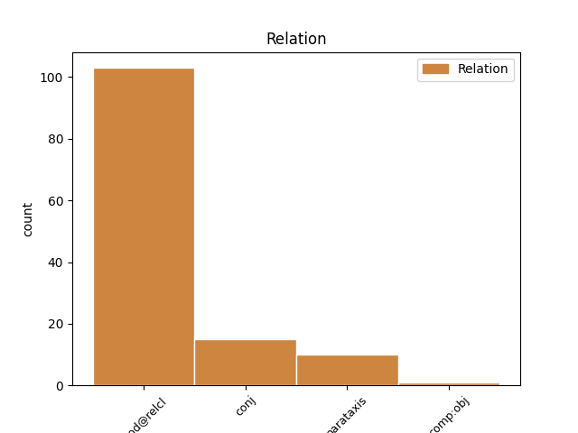
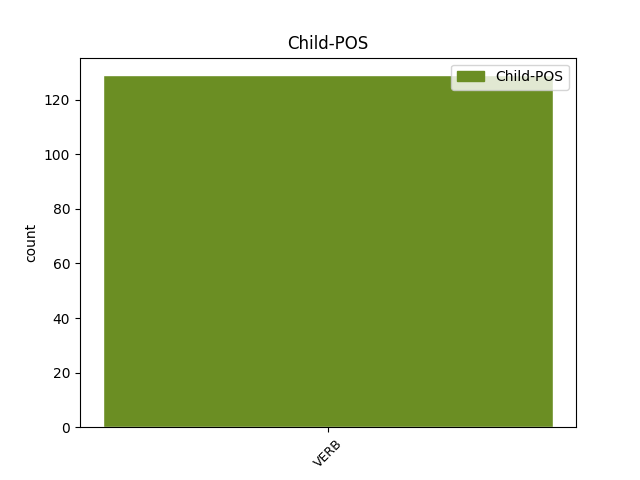

Distribution of features within this leaf


Agreement Rules sorted by frequency.
- When the dependent token is the modifer(mod@relcl) of the head token, and the head token is NOUN and the dependent token is VERB.
1 Álbmot álbmot NOUN N Case=Nom|Number=Sing 0 _ _ _
2 mii _ _ _ _ 0 _ _ _
3 ballá ballat VERB V Mood=Ind|Number=Sing|Person=3|Tense=Pres|VerbForm=Fin 1 mod@relcl _ _
4 ii _ _ _ _ 0 _ _ _
5 leat _ _ _ _ 0 _ _ _
6 friija _ _ _ _ 0 _ _ _
7 álbmot _ _ _ _ 0 _ _ _
8 . _ _ _ _ 0 _ _ _
1 De _ _ _ _ 0 _ _ _
2 celkkii _ _ _ _ 0 _ _ _
3 son son PRON Pron Case=Nom|Number=Sing|Person=3|PronType=Prs 0 _ _ _
4 guhte _ _ _ _ 0 _ _ _
5 šattai šaddat VERB V Mood=Ind|Number=Sing|Person=3|Tense=Past|VerbForm=Fin 3 mod@relcl _ _
6 oaivámužžan _ _ _ _ 0 _ _ _
7 : _ _ _ _ 0 _ _ _
8 - _ _ _ _ 0 _ _ _
9 Dii _ _ _ _ 0 _ _ _
10 galgabehtet _ _ _ _ 0 _ _ _
11 čuohppat _ _ _ _ 0 _ _ _
12 aivve _ _ _ _ 0 _ _ _
13 guovddáš _ _ _ _ 0 _ _ _
14 vuovddis _ _ _ _ 0 _ _ _
15 das_go _ _ _ _ 0 _ _ _
16 guovdu _ _ _ _ 0 _ _ _
17 lea _ _ _ _ 0 _ _ _
18 buoremus _ _ _ _ 0 _ _ _
19 vuovdi _ _ _ _ 0 _ _ _
20 . _ _ _ _ 0 _ _ _
1 Jouni _ _ _ _ 0 _ _ _
2 lea leat AUX V Mood=Ind|Number=Sing|Person=3|Tense=Pres|VerbForm=Fin 0 _ _ _
3 hárjánan _ _ _ _ 0 _ _ _
4 bivdi _ _ _ _ 0 _ _ _
5 ja _ _ _ _ 0 _ _ _
6 lohká lohkat VERB V Mood=Ind|Number=Sing|Person=3|Tense=Pres|VerbForm=Fin 2 conj _ _
7 iežas _ _ _ _ 0 _ _ _
8 hirbmadit _ _ _ _ 0 _ _ _
9 illudan _ _ _ _ 0 _ _ _
10 go _ _ _ _ 0 _ _ _
11 vuittii _ _ _ _ 0 _ _ _
12 váldovuoittu _ _ _ _ 0 _ _ _
13 . _ _ _ _ 0 _ _ _
1 Lea leat AUX V Mood=Ind|Number=Sing|Person=3|Tense=Pres|VerbForm=Fin 0 _ _ _
2 eahpečielggas _ _ _ _ 0 _ _ _
3 lea leat VERB V Mood=Ind|Number=Sing|Person=3|Tense=Pres|VerbForm=Fin 1 parataxis _ _
4 go _ _ _ _ 0 _ _ _
5 mánáidgárddiid _ _ _ _ 0 _ _ _
6 lohku _ _ _ _ 0 _ _ _
7 lassánan _ _ _ _ 0 _ _ _
8 vai _ _ _ _ 0 _ _ _
9 unnon _ _ _ _ 0 _ _ _
10 . _ _ _ _ 0 _ _ _
1 Ánne Ánne PROPN N Case=Nom|Number=Sing 0 _ _ _
2 , _ _ _ _ 0 _ _ _
3 geasa _ _ _ _ 0 _ _ _
4 Mihkkal _ _ _ _ 0 _ _ _
5 lei leat VERB V Mood=Ind|Number=Sing|Person=3|Tense=Past|VerbForm=Fin 1 mod@relcl _ _
6 liikostan _ _ _ _ 0 _ _ _
7 , _ _ _ _ 0 _ _ _
8 lei _ _ _ _ 0 _ _ _
9 hui _ _ _ _ 0 _ _ _
10 čeavlái _ _ _ _ 0 _ _ _
11 . _ _ _ _ 0 _ _ _
1 Go _ _ _ _ 0 _ _ _
2 jur _ _ _ _ 0 _ _ _
3 nu _ _ _ _ 0 _ _ _
4 doavki doavki ADJ A Case=Nom|Number=Sing 0 _ _ _
5 ges _ _ _ _ 0 _ _ _
6 lean _ _ _ _ 0 _ _ _
7 ahte _ _ _ _ 0 _ _ _
8 lottážiid _ _ _ _ 0 _ _ _
9 čuovun _ _ _ _ 0 _ _ _
10 , _ _ _ _ 0 _ _ _
11 bealká bealkit VERB V Mood=Ind|Number=Sing|Person=3|Tense=Pres|VerbForm=Fin 4 conj _ _
12 Joneš-bojá _ _ _ _ 0 _ _ _
13 iežainis _ _ _ _ 0 _ _ _
14 . _ _ _ _ 0 _ _ _
1 Ávvir _ _ _ _ 0 _ _ _
2 čálii _ _ _ _ 0 _ _ _
3 ivttáš _ _ _ _ 0 _ _ _
4 aviissas _ _ _ _ 0 _ _ _
5 7-jahkásačča 7-jahki ADJ N* Case=Gen|Number=Sing 0 _ _ _
6 birra _ _ _ _ 0 _ _ _
7 gean _ _ _ _ 0 _ _ _
8 amas _ _ _ _ 0 _ _ _
9 dievdu _ _ _ _ 0 _ _ _
10 geahččalii geahččalit VERB V Mood=Ind|Number=Sing|Person=3|Tense=Past|VerbForm=Fin 5 mod@relcl _ _
11 fillet _ _ _ _ 0 _ _ _
12 ruđaiguin _ _ _ _ 0 _ _ _
13 iežas _ _ _ _ 0 _ _ _
14 biilii _ _ _ _ 0 _ _ _
15 . _ _ _ _ 0 _ _ _
1 Vuoigŋa vuoigŋa NOUN N Case=Nom|Number=Sing 0 _ _ _
2 gal _ _ _ _ 0 _ _ _
3 lea _ _ _ _ 0 _ _ _
4 geargat _ _ _ _ 0 _ _ _
5 , _ _ _ _ 0 _ _ _
6 muhto _ _ _ _ 0 _ _ _
7 oažži _ _ _ _ 0 _ _ _
8 lea leat VERB V Mood=Ind|Number=Sing|Person=3|Tense=Pres|VerbForm=Fin 1 conj _ _
9 headju _ _ _ _ 0 _ _ _
10 . _ _ _ _ 0 _ _ _
1 Min _ _ _ _ 0 _ _ _
2 lingvisttalaš _ _ _ _ 0 _ _ _
3 filosofiija _ _ _ _ 0 _ _ _
4 lea _ _ _ _ 0 _ _ _
5 ahte _ _ _ _ 0 _ _ _
6 analysaprográmmat _ _ _ _ 0 _ _ _
7 galget _ _ _ _ 0 _ _ _
8 leat _ _ _ _ 0 _ _ _
9 grammatihkalaččat grammatihkalaš ADJ A Case=Nom|Number=Plur 0 _ _ _
10 , _ _ _ _ 0 _ _ _
11 eaige ii VERB V Mood=Ind|Number=Plur|Person=3|Polarity=Neg|VerbForm=Fin 9 comp:obj _ _
12 vuođđuduvvon _ _ _ _ 0 _ _ _
13 statistihkkii _ _ _ _ 0 _ _ _
14 , _ _ _ _ 0 _ _ _
15 ja _ _ _ _ 0 _ _ _
16 vuođđun _ _ _ _ 0 _ _ _
17 leat _ _ _ _ 0 _ _ _
18 sátnehámit _ _ _ _ 0 _ _ _
19 – _ _ _ _ 0 _ _ _
20 mii _ _ _ _ 0 _ _ _
21 hukset _ _ _ _ 0 _ _ _
22 analysa _ _ _ _ 0 _ _ _
23 botnis _ _ _ _ 0 _ _ _
24 bajás _ _ _ _ 0 _ _ _
25 . _ _ _ _ 0 _ _ _
Disagree Examples:
1 Lea _ _ _ _ 0 _ _ _
2 buoret _ _ _ _ 0 _ _ _
3 borramuš _ _ _ _ 0 _ _ _
4 go _ _ _ _ 0 _ _ _
5 dat dat PRON Pron Case=Nom|Number=Sing|PronType=Dem 0 _ _ _
6 maid _ _ _ _ 0 _ _ _
7 nuorat _ _ _ _ 0 _ _ _
8 dán _ _ _ _ 0 _ _ _
9 áigge _ _ _ _ 0 _ _ _
10 njillet njiellat VERB V Mood=Ind|Number=Plur|Person=3|Tense=Pres|VerbForm=Fin 5 mod@relcl _ SpaceAfter=No
11 . _ _ _ _ 0 _ _ _
1 Lea _ _ _ _ 0 _ _ _
2 unnán unnán PRON Pron Case=Nom|Number=Sing|PronType=Ind 0 _ _ _
3 maid _ _ _ _ 0 _ _ _
4 sáhttit sáhttit VERB V Mood=Ind|Number=Plur|Person=1|Tense=Pres|VerbForm=Fin 2 mod@relcl _ _
5 dahkat _ _ _ _ 0 _ _ _
6 . _ _ _ _ 0 _ _ _
1 Máhttájeaddjit _ _ _ _ 0 _ _ _
2 orro _ _ _ _ 0 _ _ _
3 jávohaga _ _ _ _ 0 _ _ _
4 eai _ _ _ _ 0 _ _ _
5 ge _ _ _ _ 0 _ _ _
6 dalle _ _ _ _ 0 _ _ _
7 muitalan _ _ _ _ 0 _ _ _
8 geasage giige PRON Pron Case=Ill|Number=Sing|PronType=Ind 0 _ _ _
9 maid _ _ _ _ 0 _ _ _
10 ledje leat VERB V Mood=Ind|Number=Plur|Person=3|Tense=Past|VerbForm=Fin 8 mod@relcl _ _
11 oaidnán _ _ _ _ 0 _ _ _
12 . _ _ _ _ 0 _ _ _
1 Soaŋu-girji soaŋu-girji NOUN N Case=Nom|Number=Sing 0 _ _ _
2 , _ _ _ _ 0 _ _ _
3 mas _ _ _ _ 0 _ _ _
4 leat leat VERB V Mood=Ind|Number=Plur|Person=3|Tense=Pres|VerbForm=Fin 1 mod@relcl _ _
5 noveallat _ _ _ _ 0 _ _ _
6 , _ _ _ _ 0 _ _ _
7 bođii _ _ _ _ 0 _ _ _
8 jagi _ _ _ _ 0 _ _ _
9 1971 _ _ _ _ 0 _ _ _
10 . _ _ _ _ 0 _ _ _
1 Ásahuvvo _ _ _ _ 0 _ _ _
2 bargojoavku bargojoavku NOUN N Case=Nom|Number=Sing 0 _ _ _
3 mas _ _ _ _ 0 _ _ _
4 leat leat VERB V Mood=Ind|Number=Plur|Person=3|Tense=Pres|VerbForm=Fin 2 mod@relcl _ _
5 sámi _ _ _ _ 0 _ _ _
6 mediaid _ _ _ _ 0 _ _ _
7 ovddasteaddjit _ _ _ _ 0 _ _ _
8 . _ _ _ _ 0 _ _ _